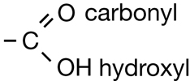
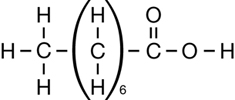
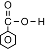
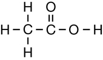
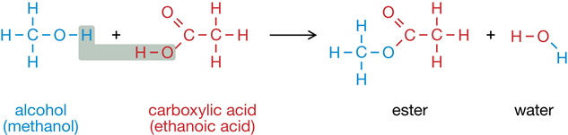
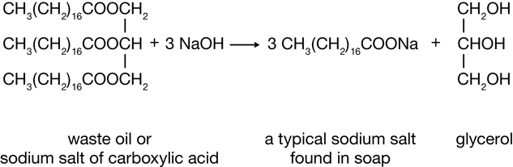

Module 6—Petrochemicals
 Explore
Explore
The second class of organic molecules that contains oxygen atoms is the carboxylic acids family. Read pages 436–437 in the textbook to learn more about carboxylic acids.
Carboxylic acids always contain the carboxyl functional group, which is illustrated below. Work through “Sample problem 10.5” and “Communication example 1” on page 438 in the textbook.

You might note that in the reaction for biodiesel shown in Get Focused, the first product—the carboxylic acid—is not complete; it is deficient a hydrogen atom. The hydrogen in question is part of the hydroxyl group, within the carboxyl group. In Unit D you will learn more about the reactions and acidity of carboxylic acids. You will also learn how a carboxylic acid can be correctly represented in the form shown in the biodiesel equation.
 Self-Check
Self-Check
SC 1. Complete “Practice” questions 1–2 on page 438 in the textbook to practise naming and drawing chemical structures for carboxylic acids.
Self-Check Answers
Contact your teacher if your answers vary significantly from the answers provided here.
SC 1.
Practice 1.
- 
- 
- 
Practice 2.
- methanoic acid (you may hear the common name “formic acid”)
- pentanoic acid (you may hear the common name “valeric acid”)
- hexanoic acid (you may hear the common name “caproic acid”)
 Read
Read
esterification reaction: a chemical reaction in which a carboxylic acid and an alcohol combine to produce an ester and water
esters: a family of organic compounds characterized by the ester functional group (-COO-)
In Module 6 you have studied many kinds of organic reactions including substitution, fermentation, cracking, addition, and elimination. Another major reaction of carboxylic acids is an esterification reaction. Read pages 438–440 in the textbook to learn about this type of chemical reaction and its product—esters.
Work through “Sample problem 10.6,” “Sample problem 10.7,” and Communication example 2” on page 440 in the textbook.
 Watch and Listen
Watch and Listen
View the following video on “Naming and Preparing Esters” to better your understanding of esters. References made to “the margin” are references to the margins of the textbook.
 Reflect and Connect
Reflect and Connect
RC 1. Compare the two processes shown in the reactions below. Identify similarities and differences between the two reactions.


You may have noticed that these two reactions involve the same reactants and products but are each other’s reverse—one creates an ester and the other breaks down an ester.
Interestingly, esters are used in making soap. Animal fats and vegetable oils are esters and are a key ingredient in making soap. When esters are combined with a strong base, sodium hydroxide for example, and heated, the reaction creates a salt of a carboxylic acid (the soap), and glycerol (propane-1,2,3-triol).
Self-Check
SC 2. Complete “Practice” questions 4–6 on page 441 in the textbook.
Self-Check Answers
Contact your teacher if your answers vary significantly from the answers provided here.
SC 2.
Practice 4.
- ethyl propanoate (from propanoic acid and ethanol)
- methyl butanoate (from butanoic acid and methanol)
- butyl methanoate (from methanoic acid and butan-1-ol)
- propyl ethanoate (from ethanoic acid and propan-1-ol)
If you got the two fragments backwards when you named the esters in this question (e.g., propyl ethanoate for part a above), try writing the full structural formula for each—it will help you get the name right.
Practice 5.
- As shown in “Table 2” on page 439 of the textbook, the ester is pentyl butanoate. The acid required is butanoic acid and the alcohol needed is pentan-1-ol.
- As shown in the same table, the ester is octyl ethanoate. The acid required is ethanoic acid and the alcohol needed is octan-1-ol.
Practice 6.
- For each class of compounds, as the molar mass increases so does the number of electrons. The increase in the number of electrons strengthens the London forces attracting the molecules to each other, thus increasing the boiling point.
- The alkanes exhibit only London forces. Even though the esters are polar and have dipole-dipole forces as well as London forces, the effect is negligible in large molecules where only the small area around the oxygen atoms is polar.
- Of the three classes, only the carboxylic acids contain the O-H bond. Because this feature gives them hydrogen bonding, these compounds have stronger intermolecular bonding and, therefore, higher boiling points.
- Yes. Knowledge of London forces, dipole-dipole interactions, and hydrogen bonding explain the observed properties.
- The effect of molecular shape on London forces must be considered in branched-chain structures.
- The line for alcohols would fall between those of methyl esters and carboxylic acids.
- The prediction in part f is verified. (If you made the wrong prediction, check that you remembered that alcohols have H-bonding.)